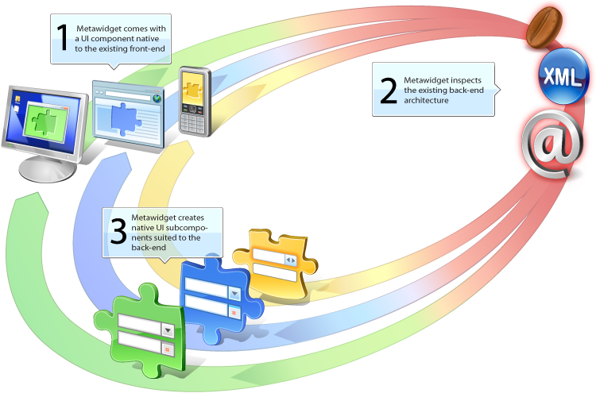

<%@ page language="java" %>
<%@ taglib tagdir="/WEB-INF/tags" prefix="tags"%>

<tags:page useTooltips="true">

	<div id="quote-left"></div>
	<div id="quote-right"></div>

	<div id="newsticker" style="display: none">
		<ul>
			<li>
				Looks impressive... the author of this library has evidently put some real thought into this
				<a href="http://www.theserverside.com/news/thread.tss?thread_id=51572" target="_blank">Michael Klaene (Java Developer)</a>
			</li>
			<li>
				I spun up the SwingMetawidget, very impressive. Love the annotations, too.<br/>
				Thanks a lot for this API! I am going to try one of the web widgets next
				<a href="http://www.theserverside.com/news/thread.tss?thread_id=51572" target="_blank">i k (Swing Developer)</a>
			</li>
			<li>
				We have a large GWT app it could certainly do with this for the forms. The<br/>
				documentation looks very good. I also really like the 'don't take over the GUI' principle 
				<a href="http://www.theserverside.com/news/thread.tss?thread_id=51572" target="_blank">David Tinker (GWT Developer)</a>
			</li>
			<li>
				This looks like a very interesting project!
				<a href="http://kennardconsulting.blogspot.com/2008/04/declarative-user-interface-generator.html#comments">Johan Andries (Java Developer)</a>
			</li>
			<li>
				I strongly agree that UI duplication is mindless, error-prone code that<br/>
				should have	been solved years ago. I am so glad someone is addressing this
				<a href="survey.html">Survey respondent</a>
			</li>
			<li>
				Sounds impressive. I was infact looking for such a utility for a while
				<a href="http://www.theserverside.com/news/thread.tss?thread_id=51572" target="_blank">Shashi Ayachitam (Java Developer)</a>			
			</li>
			<li>
				Developers no longer have to spend too much time to bind UI with POJO
				<a href="http://vinaytech.wordpress.com/2008/10/18/metawidget-adds-supports-for-google-web-toolkit" target="_blank">Vinay Saintantonyar (Java Developer)</a>			
			</li>
			<li>
				The strength of Metawidget is it allows the developer flexibility to change how the	front-end is rendered because<br/>
				Metawidget does not exclusively own	the front-end like many other frameworks
				<a href="http://markashworth.blogspot.com/2008/02/metawidget-introduction-background.html" target="_blank">Mark Ashworth (Java Developer)</a>			
			</li>
			<li>
				Think of a configurable form widget driven off of your beans through runtime inspection<br/>
				of properties, getters and setters, annotations, etc
				<a href="http://www.pathf.com/blogs/2008/07/metawidget-convention-over-configuration-ui" target="_blank">Dietrich Kappe (Java Developer)</a>			
			</li>
			<li>
				Our app has over 300 screens and UI duplication is a huge maintenance issue for us. You are definitely<br/>
				on to something here and I like the fact that your framework integrates with others	and does not try to 'own' the UI
				<a href="survey.html">Survey respondent</a>
			</li>
			<li>
				I think Object Interface Mapper (OIM) is a very good 'concept' for this domain.<br/>
				I usually call it 'domain model framework' or something like that, but now I think OIM is more clear
				<a href="http://kennardconsulting.blogspot.com/2008/09/generate-user-inteface-automatically.html#comments" target="_blank">wangzx (Java Developer)</a>			
			</li>
			<li>
				In the past I used [other frameworks] but their approach is too invasive and unfittable. Metawidget<br/>
				is very flexible and integrates an environment already in production. Great great great framework!!!
				<a href="http://kennardconsulting.blogspot.com/2008/12/better-than-free-metawidget-v065.html" target="_blank">Nicola (Java Developer)</a>
			</li>
			<li>
				Metawidget is worth taking a look at
				<a href="http://www.theserverside.com/news/thread.tss?thread_id=52466" target="_blank">Eric Rich (Java Developer)</a>
			</li>
			<li>
				I finally had a chance to try out Metawidget on an example of my own and it is quite amazing
				<a href="http://mojavelinux.com" target="_blank">Dan Allen (author, Seam In Action)</a>
			</li>
			<li>
				Here's something different... it builds on your underlying framework and so is not competing with it
				<a href="http://devsac.blogspot.com/2008/10/must-have-tools-for-every-smart-java.html" target="_blank">Sachin (Java Developer)</a>
			</li>
			<li>
				I have been using Metawidget (which is a really cool library by the way) on a project lately...
				<a href="http://blog.singingwizard.org/2009/05/metawidget-beanutils-auto-update-binding" target="_blank">Arthur Peters (Swing Developer)</a>
			</li>
			<li>
				On my todo list is to develop an integration with Metawidget. I'm impressed by the work they're doing here
				<a href="http://www.theserverside.com/news/thread.tss?thread_id=58283" target="_blank">Dan Haywood (author, Domain-Driven Design using Naked Objects)</a>
			</li>
			<li>
				Metawidget not only provides a nice UI framework but offers realistically implemented connections to backends
				<a href="http://mobilebytes.wordpress.com/2009/06/10/an-android-ui-widgetkit" target="_blank">Fred Grott (Android Developer)</a>
			</li>
			<li>
				I have taken a look at it, and found it's a wonderful tool. When coding with SWT, I always want to find such kind of tool...
				<a href="http://old.nabble.com/Re%3A-Metawidget-has-added-SWT-support-p28442101.html" target="_blank">Zhong Nanhai (SWT Developer)</a>
			</li>
			<li>
				It works, beautifully! Thanks for bringing us this powerful stuff
				<a href="https://sourceforge.net/projects/metawidget/forums/forum/747623/topic/3788210/index/page/1" target="_blank">Phaderm (Swing Developer)</a>
			</li>
		</ul>
	</div>
	
	<tags:body>

		<center id="quick-start">
			<tags:quickstart />
		</center>

		<h2 style="font-family: Arial, sans-serif; font-size: 10pt; font-weight: bold">
			Metawidget is a 'smart User Interface widget' that populates itself, at runtime, with UI components to match
			the properties of your business objects.
		</h2>

		<h3 style="font-family: Arial, sans-serif; font-size: 10pt; font-weight: normal">
			Metawidget does this without introducing new technologies. It inspects your <em>existing</em> back-end
			architecture (such as JavaBeans, existing annotations, existing XML configuration files) and creates widgets native to your
			<em>existing</em> front-end framework (such as Swing, Java Server Faces, Struts, Android).
		</h3>

		<p>
			Metawidget does not replace or hide your existing UI framework and guarantees that your investment in
			its technology and knowledge is as valid as always. The <a href="http://www.gnu.org/licenses/lgpl.html" target="_blank">LGPL</a> Open
			Source license allows the use of Metawidget in open source and commercial projects.
		</p>

		<map id="overview-map" name="overiew-map">
			<area id="area-desktop" shape="poly" coords="0,185,11,105,112,118,103,204,89,227,52,234,21,222,0,184" alt=""/>
			<area id="area-web" shape="poly" coords="117,172,117,100,207,109,207,188" alt=""/>
			<area id="area-mobile" shape="poly" coords="225,168,225,82,266,85,266,175" alt=""/>
			<area id="area-inspect" shape="poly" coords="217,74,273,80,273,175,645,56,678,1,217,0" alt=""/>
			<area id="area-property" shape="poly" coords="665,67,655,41,683,0,720,20,690,64" alt=""/>
			<area id="area-xml" shape="circle" coords="711,95,36" alt=""/>
			<area id="area-annotation" shape="circle" coords="695,182,44" alt=""/>
			<area id="area-create" shape="poly" coords="404,320,651,215,724,234,573,499,205,500,399,382" alt=""/>
			<area id="area-web-widget" shape="poly" coords="258,317,280,320,280,338,313,339,315,373,332,376,331,417,273,437,254,435,226,405,228,313" alt=""/>
			<area id="area-desktop-widget" shape="poly" coords="234,479,231,384,199,380,199,357,174,355,173,373,143,371,140,389,119,386,116,416,137,418,136,453,177,459,177,473,233,482" alt=""/>
			<area id="area-mobile-widget" shape="poly" coords="397,377,403,297,298,282,290,336,313,340,314,371" alt=""/>
			<area id="area-embed" shape="poly" coords="90,243,131,190,195,203,223,172,266,182,112,397,148,487,0,487,0,243" alt=""/>
		</map>

		<center>
			<div style="width: 750px">
				
		
				<div style="position: relative; text-align: left">
					<div class="tooltip" style="top: -500px; left: 30px; display: block">
						<span>1</span>
						<h4 style="font-family: Arial, sans-serif; font-size: 8pt; font-weight: normal; font-style: normal; margin: 0">
							Metawidget comes with a UI component native to your <em>existing</em> front-end
						</h4>
					</div>
		
					<div class="tooltip" style="top: -450px; left: 470px; display: block">
						<span>2</span>
						<h4 style="font-family: Arial, sans-serif; font-size: 8pt; font-weight: normal; font-style: normal; margin: 0">
							Metawidget inspects, at runtime, your <em>existing</em> back-end architecture
						</h4>
					</div>
		
					<div class="tooltip" style="top: -240px; left: 70px; display: block">
						<span>3</span>
						<h4 style="font-family: Arial, sans-serif; font-size: 8pt; font-weight: normal; font-style: normal; margin: 0">
							Metawidget creates native UI subcomponents matched to the back-end
						</h4>
					</div>
				</div>
			</div>
			
			<table id="supported-tech">
				<thead>
					<tr>
						<th colspan="2"><h3>Supported Technologies</h3></th>
					</tr>
				</thead>
				<tbody>
					<tr>
						<td>
							<h3>1. Front-Ends</h3>
							<em>Metawidget has a native component<br/>for each of these</em>
							<ul>
								<li>Android</li>
								<li>Google Web Toolkit (GWT)</li>
								<li>Java Server Faces (JSF)
									<ul>
										<li>Facelets</li>
										<li>ICEfaces</li>
										<li>RichFaces</li>
										<li>Tomahawk</li>
									</ul></li>
								<li>Java Server Pages (JSP)
									<ul>
										<li>DisplayTag</li>
									</ul></li>
								<li>Spring Web MVC</li>
								<li>Struts</li>
								<li>Swing
									<ul>
										<li>Beans Binding (JSR 295)</li>
										<li>Commons BeanUtils</li>
										<li>JGoodies Validator</li>
										<li>MigLayout</li>
										<li>SwingX</li>
									</ul></li>
								<li>SWT</li>
								<li><a href="contributing.html">...help us add more!</a></li>
							</ul>
						</td>
						<td>
							<h3>2. Back-Ends</h3>
							<em>Metawidget can read business object<br/>information from all of these</em>
							<ul>
								<li>Annotations</li>
								<li>Bean Validation (JSR 303)</li>
								<li>Commons JEXL</li>
								<li>Commons Validator</li>
								<li>Groovy</li>
								<li>Hibernate</li>
								<li>Hibernate Validator</li>
								<li>JavaBeans</li>
								<li>Java Persistence Architecture (JPA)</li>
								<li>Javassist</li>
								<li>JBoss jBPM</li>
								<li>OVal</li>
								<li>Scala</li>
								<li>Seam</li>
								<li>Swing AppFramework</li>
								<li><a href="contributing.html">...help us add more!</a></li>
							</ul>
						</td>
					</tr>
				</tbody>
			</table>
		</center>

		<p>
			At a high level, the goals of Metawidget are:
		</p>

		<ul>
			<li>to create UI widgets by inspecting existing back-end architectures</li>
			<li>not to try to 'own' the entire UI, but to focus on creating native subcomponents for slotting into existing UIs</li>
			<li>to perform inspection <em>at runtime</em>, detecting types and subtypes dynamically</li>
		</ul>

		<p>
			Metawidget requires J2SE 1.4 or higher. Some optional features require Java SE 5 or higher.
		</p>

		<p>
			The download includes documentation and examples for all supported front-ends and back-ends. <a href="download.html">Click here to download it</a>.
		</p>

		<div id="tooltip-desktop" class="tooltip">
			<strong>Desktop:</strong> Metawidget has a native Swing JComponent and a native SWT Composite
		</div>
	
		<div id="tooltip-web" class="tooltip">
			<strong>Web:</strong> Metawidget has a native component/taglib for each popular Web framework
		</div>
	
		<div id="tooltip-mobile" class="tooltip">
			<strong>Mobile:</strong> Metawidget has a native Android View
		</div>
	
		<div id="tooltip-inspect" class="tooltip">
			<strong>Inspect:</strong> all Metawidgets, regardless of which front-end they are native to, use
			a common inspection process to inspect the existing back-end architecture
		</div>
	
		<div id="tooltip-property" class="tooltip">
			<strong>Properties:</strong> Metawidget inspects runtime properties from objects such as JavaBeans, GroovyBeans and Scala objects
		</div>
	
		<div id="tooltip-annotation" class="tooltip">
			<strong>Annotations:</strong> Metawidget inspects runtime Java objects for existing annotations, such
			as JPA and Hibernate Validator annotations
		</div>
	
		<div id="tooltip-xml" class="tooltip">
			<strong>XML:</strong> Metawidget inspects existing XML configuration files, such as<br/>
			struts-config.xml, hibernate.cfg.xml and pageflow.jpdl.xml
		</div>
	
		<div id="tooltip-create" class="tooltip">
			<strong>Create:</strong> the inspection results are used to choose the best UI
			subcomponents, depending on those available on the native platform. This includes
			support for third-party component libraries
		</div>
	
		<div id="tooltip-web-widget" class="tooltip">
			<strong>Web:</strong> Metawidget creates native components/taglibs for each popular Web framework,
			including attaching validators
		</div>
	
		<div id="tooltip-desktop-widget" class="tooltip">
			<strong>Desktop:</strong> Metawidget creates native Swing JComponents, optionally
			bound with Beans Binding (JSR 295), and native SWT Controls
		</div>
	
		<div id="tooltip-mobile-widget" class="tooltip">
			<strong>Mobile:</strong> Metawidget creates native Android Views
		</div>
	
		<div id="tooltip-embed" class="tooltip">
			<strong>Embed:</strong> the native UI subcomponents slot into the existing front-end
		</div>
	
		<script type="text/javascript">
			new Tooltip( "area-web", "tooltip-web" );
			new Tooltip( "area-desktop", "tooltip-desktop" );
			new Tooltip( "area-mobile", "tooltip-mobile" );
			new Tooltip( "area-inspect", "tooltip-inspect" );
			new Tooltip( "area-property", "tooltip-property" );
			new Tooltip( "area-annotation", "tooltip-annotation" );
			new Tooltip( "area-xml", "tooltip-xml" );
			new Tooltip( "area-create", "tooltip-create" );
			new Tooltip( "area-web-widget", "tooltip-web-widget" );
			new Tooltip( "area-desktop-widget", "tooltip-desktop-widget" );
			new Tooltip( "area-mobile-widget", "tooltip-mobile-widget" );
			new Tooltip( "area-embed", "tooltip-embed" );
		</script>
		
	</tags:body>
	
</tags:page>
